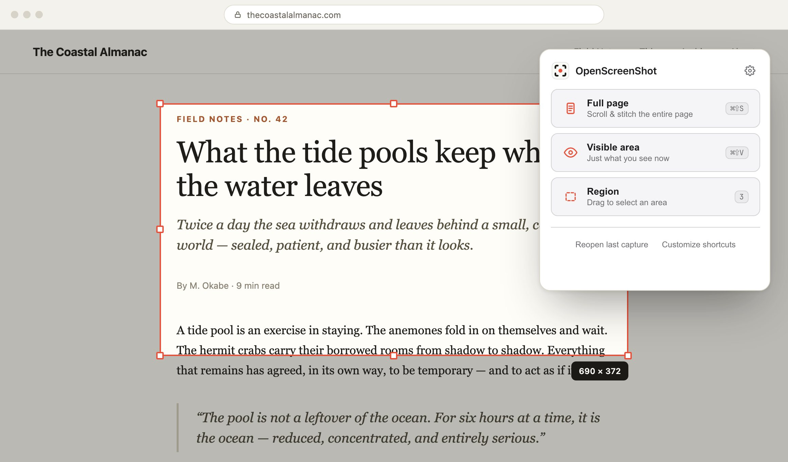

Capture, annotate and export — without uploading anything.
Full-page, visible-area and region screenshots for Chrome, with a complete editor that runs on your device.
Works on Chrome, Edge, Brave, Arc and other Chromium browsers.
601 Chrome Web Store users · 55 stars on GitHub · v0.4.0 · MIT licensed · Show HN thread

The whole workflow, in one place.
Capture a full page, mark it up, blur what should stay private, then export — no tab juggling, no separate editor app.
Full-page capture to export, recorded at 2.4× speed.
Capture
Full page, visible area, or a dragged region. One click in the popup, a keyboard shortcut, or number keys 1–3.
Edit
Rectangles, arrows, pen, highlighter, text, numbered step badges, blur and crop — with undo all the way back.
Export
PNG, JPEG, WebP, or multi-page PDF with page size and margins. Download it, or copy straight to the clipboard.
Your screenshots never leave your browser.
Screenshots are often the most sensitive images on your machine. The extension makes no network requests at all.
- Image data stays on your device — captures live in local extension storage until you export them.
- No account, no analytics, no telemetry — nothing to sign up for and nothing to opt out of.
- Zero host permissions — it reads the tab you capture, when you capture it, and nothing else.
- MIT licensed, no watermarks — read every line on GitHub, keep every pixel of your exports.
"permissions": [
"activeTab",
"scripting",
"storage",
"unlimitedStorage",
"downloads"
],
"host_permissions": []activeTabaccess the current tab — only when you click
scriptingrun the capture script on that tab
storagekeep your settings and last capture on-device
downloadssave exports to your Downloads folder
host_permissions: []no standing access to any website
Take a screenshot the way you meant to.
Free, open source, and installed in seconds.
Works on Chrome, Edge, Brave, Arc and other Chromium browsers.